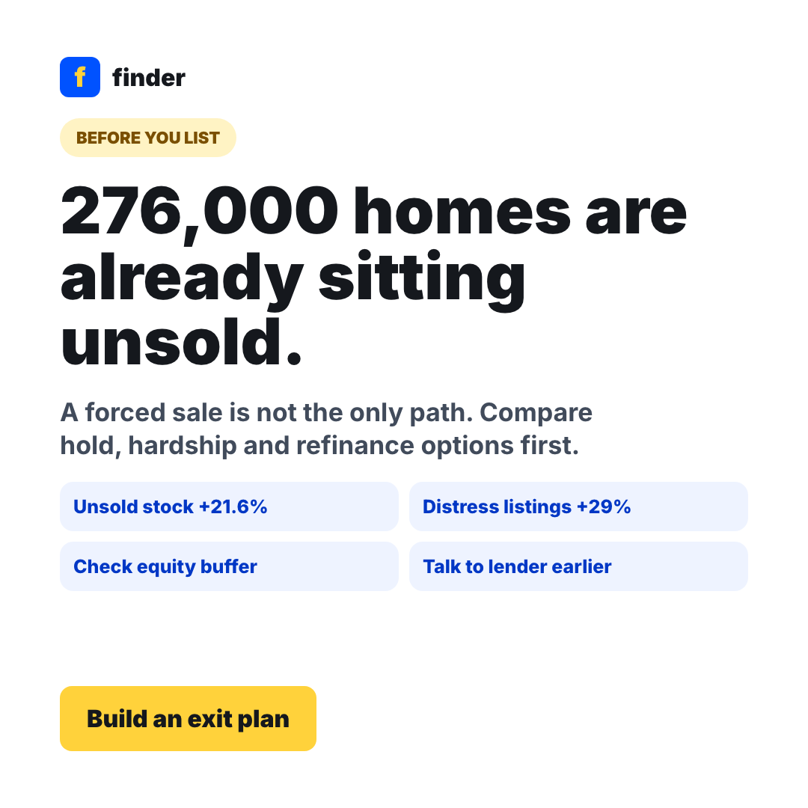
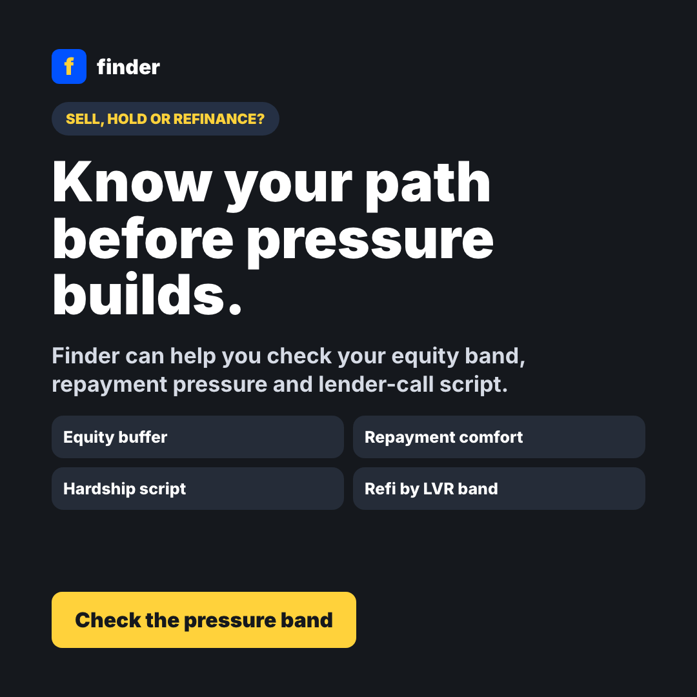

Score the pressure
Ask timeline, repayments, suburb, estimated equity, and whether the user has already spoken to their lender.
Auction clearance just fell below 50%
Cotality data cited by ABC puts the latest national auction clearance rate at 48.2%, while SQM reports distressed listings up 29% year on year. This flow turns a frightening property headline into a practical sell, hold, hardship or refinance decision.
Make the pressure visible, then route people into the right comparison or help pathway without forcing every user into a generic refinance table.
Ask timeline, repayments, suburb, estimated equity, and whether the user has already spoken to their lender.
Show sell, hold, hardship, refinance, or rent-out options with plain trade-offs and urgency flags.
Send healthy borrowers to LVR-banded refinance; stressed borrowers to hardship scripts and broker support.
Square social variants for Meta, Instagram and partner/creator read-outs.

